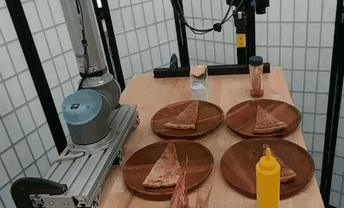
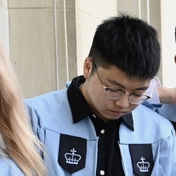
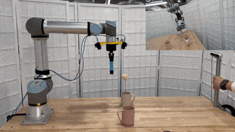
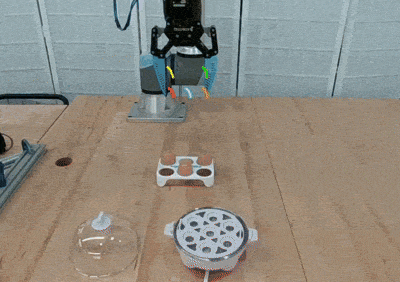
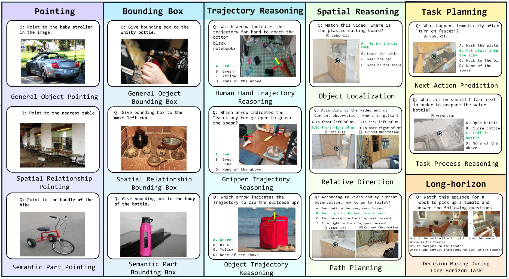
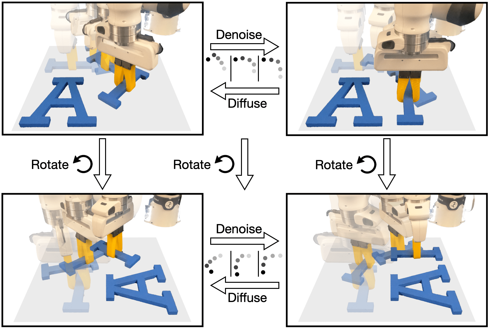
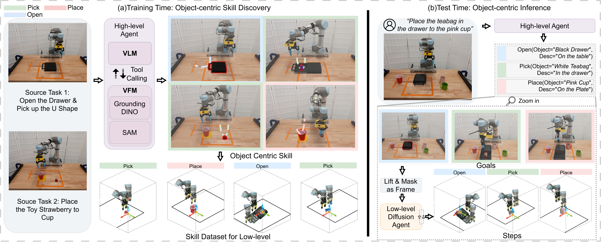
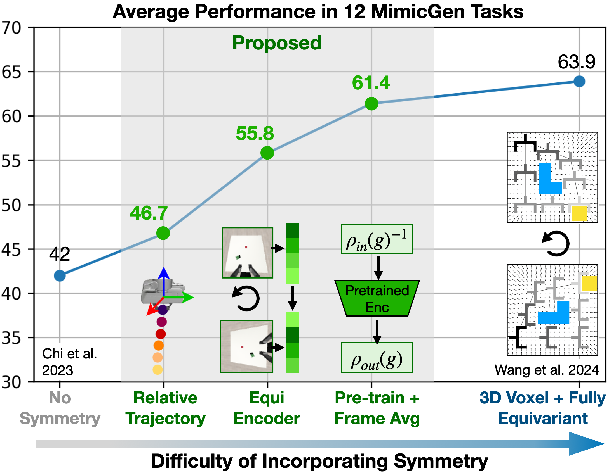
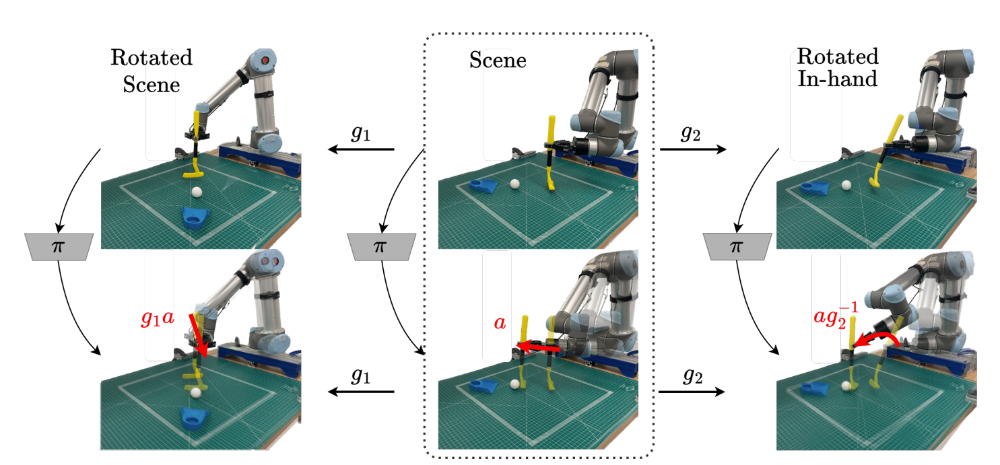

Conference on Robot Learning (CoRL), 2026
[arxiv]
I am a PhD student at Northeastern, advised by Prof. Robert Platt and Robin Walters. I'm a full-stack roboticist working toward general-purpose robotic systems, spanning the model, controller, and data layers of the stack. The journey toward the ultimate principles of intelligence remains long.
I will be graduating in 2027 and am on the job market this cycle, looking for positions in industry. If you see a potential fit, please feel free to reach out!

* indicates equal contribution, † indicates equal advising












